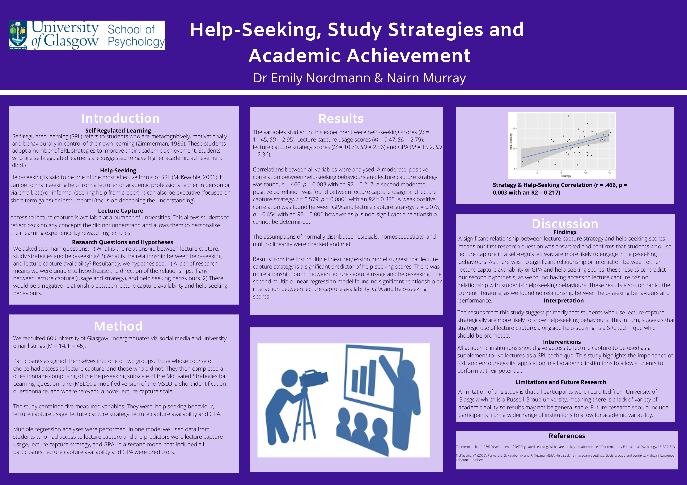

Images of your time with us
In this section you will find images and photos that people submitted to represent their year, their friends, and their dissertations.
Us & Our Time!
Perfect or Good by Grace Furnell
Simulations by Mandy Norrbo

Dreadlocks: Before Dissertation And After Dissertation by Ross Keegan
We Learnt This by Kroot Soomets

A Face by Leah Statham

Seasons by Aischa Reinken
(Left to Right) Cheyenne Lückemeier, Aischa Reinken, Ebba Magnusson, Mandy Norrbo
Aischa has also contributed a poem called Seasons to this book.

Collage by Marleen Lomann

Online Learning by Grace Furnell
Friends by Jinin Cheung
At the Party by Grace Furnell
Groups by Perrin Yan

Lasting Friendships by Vilte Noreikaite & Judy Chu
We met in psychology lab when we were in our 1st Year at University.
And we have been best friends ever since.
All the essentials while studying at UofG by Marine Fleury
Friends for life by Antonella and Belen
Timo Schnabl
Our Projects!
Participants by Julia Someya
A Meta-Analysis Shiny App by Mandy Norrbo
My Journey in Studies by Iza Soklic Poljak
Download a pdf of this journey from here
A painting of The Positive Effects of Practicing Mindfulness on Death Anxiety
by Jasmin Turner
How Childline Counsellors Make Sense Of And Cope With High-Risk Contacts
by Mary Wilson
Download a larger image from here
Psychologically informed food waste behaviour intervention by Elisa Serra
Download a larger image from here
Brain Alpha Rhythms, Alerting and Attention by Simon Hanzal
Download an image of this poster from here
Do Superheroes Created By Children Adhere To Gender Stereotypes By Naomi Conway
Download a pdf of this poster from here

The effect of expectations on subjective time perception with realworld scenes
By Rebecca Griffith
Download a pdf of this poster from here
Conclusions from Contextual Differences in Abortion Stigma: Investigating the Influence of
Disgust Sensitivity, Empathy and Just-World Beliefs
By Jessica Kenny
Download a pdf of this talk from here
Themes from The Lived Experience of the Relationship Between Parenting and Leadership
By Kim Rosenberger
Download an executive summary pdf of this work from here
An Updated Abstract By Hannah Mulvihill
Read the full updated abstract by clicking here
Title: An Empirical Investigation of Self-Regulation and Social Media Use, and the Influence of These Variables on Sleep Quality in Undergraduate University Students
It was concluded that self-regulation and social media use have the ability to predict sleep quality, however this ability varied depending on the social media measure used. The meanings and implications of these findings are discussed, with the suggestion that researchers begin to implement cognitive measures of social media in future studies.
Help-Seeking, Study Strategies and Academic Achievement By Nairn Murray
Download a pdf of this poster from here

Does participant awareness impact the effect of Interpretation
Bias Modification (IBM) on interpretation bias and anxiety? By Flora Anderson
Download a pdf of this poster from here
The Effect of Tattoo Narrative on Tattoo Stigma in the Workplace By Rebecca Stewart
Download a pdf of the poster summary (right) from here